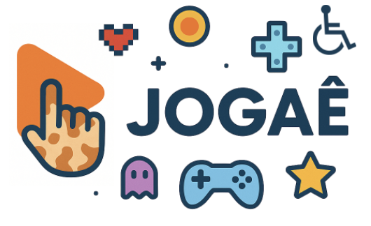

Virginia Fernandes Mota
Professora e pesquisadora em Acessibilidade para Jogos Digitais e Visão Computacional
Sobre
Sou professora no Setor de Informática do COLTEC - Universidade Federal de Minas Gerais (UFMG), Brasil. Pesquiso na área de acessibilidade para jogos digitais e na área de Visão Computacional. Também trabalho incentivando meninas a entrar na área de STEM e promovendo a conscientização sobre acessibilidade. Já supervisionei trabalhos que ganharam prêmios como Technovation Challenge (Mappid, 2020), Change the Game (2ª Edição) e Gamethons (2023).
Formação Acadêmica
🎓 Pós-doutorado (2025)
Instituto de Computação - Universidade Estadual de Campinas (UNICAMP, Brasil)
🎓 Doutorado em Ciência da Computação (2018)
Universidade Federal de Minas Gerais (UFMG, Brasil)
🎓 Mestrado em Modelagem Computacional (2011)
Universidade Federal de Juiz de Fora (UFJF, Brasil)
🎓 Mestrado em Systèmes Intelligents et Communicants (2010)
École Nationale Supérieure de l'Electronique et de ses Applications (ENSEA, França)
🎓 Bacharelado em Ciência da Computação (2008)
Universidade Federal de Juiz de Fora (UFJF, Brasil)
Publicações Recentes
- MOTA, V. F.; LARANJEIRA, CAMILA ; STEINMULLER, T. ; DUARTE, E. F.. Fair Play: Exploring Play, Accessibility and Representation Towards a Framework for Fairness in Digital Games. FAccT 2026 - ACM Conference on Fairness, Accountability and Transparency, 2026. Proceedings of ACM Conference on Fairness, Accountability and Transparency, 2026.
- MOTA, V. F.; DUARTE, E. F. . Phenomenology and Digital Games: Perspectives on Why and Directions on How. Proceedings of the Workshop on Phenomenological Concepts and Methods for HCI Research co-located with 20th IFIP TC13 International Conference on Human-Computer Interaction (INTERACT 2025), 2025.
- MOTA, V.F.; DUARTE, E. F. Revisiting and Reframing Play: Towards Incorporating Representation and Diversity in Contemporary Game Design. Communications in Computer and Information Science, Springer Nature Switzerland, 2025.
- MOTA, Virgínia Fernandes; DUARTE, Emanuel Felipe. 20 Anos de Acessibilidade no SBGames: Uma Revisão sobre Inclusão em Jogos Digitais entre 2004 e 2024. SBGames 2025, Salvador.
Para mais publicações, visite meu Currículo Lattes (abre em nova aba).
Projetos em Destaque
Magenta Arcade II
O novo jogo Magenta Arcade II, desenvolvido pelo estúdio Long Hat House de Belo Horizonte, acaba de ser lançado com recursos de acessibilidade!
O projeto de acessibilidade, intitulado “Magenta Arcade II: Estudo e Implementação de Acessibilidade para um Jogo Digital”, foi realizado em colaboração entre Long Hat House e a UFMG.

Jogaê: Jogos Acessíveis e Educativos
Conheça o projeto Jogaê, uma iniciativa focada na criação e estudo de jogos digitais acessíveis e educativos.
Ver Projeto JogaêContato
Sala 235 - Colégio Técnico - Universidade Federal de Minas Gerais
Av. Antônio Carlos, 6627. Pampulha - Belo Horizonte - MG
CEP 31270-901
E-mail: virginia@teiacoltec.org ou virginiafernandesmota@gmail.com